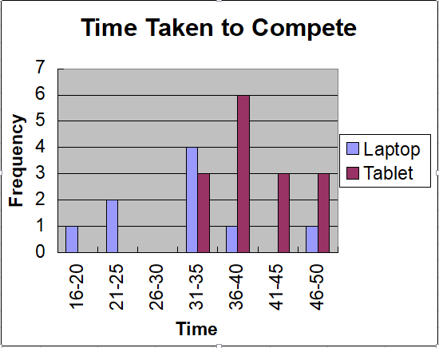
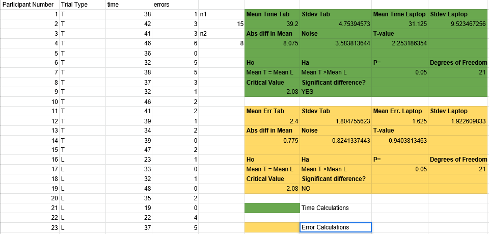

Battle of the Briefcase
Laptop vs Tablet
Results
F1. Time taken to complete taks

F2. Raw results and T test

Analysis
The results were analyzed using the student's T-test as they were too small a sample size for a Z-Test.
To test the alternative hypothesis "Tablet typing speeds are not the same as laptops" a two-tailed T test was performed. At the P= 0.05 level the T value was greater than the critical value. Therefore we must reject the null hypothesis.
In order to check whether participants increased their accuracy to improve their skill in the laptop condition a two-tailed t-test was used to see if there was any increase in error rate. At the P=0.05 level we are certain that the data does not support the alternative hypothesis so the null hypothesis is assumed. Participants in the Laptop condition did not decrease accuracy to boost speed. Therefore this would not confound the main research question.
Conclusions
The results show a significant difference in typing speed between a traditional laptop keyboard and a tablet virtual keyboard. Typing on the virtual keyboard was significantly slower. There was no significant change in errors on the virtual keyboard comared with the laptop keyboard. This supports the alternative hypothesis does decrease typing speed.